Terminating Employees in China: 2026 Compliance Checklist for Employers
Key takeaways
- This 2026 guide is designed for foreign employers building decision-grade China HR/payroll controls.
- The highest compliance risk usually comes from execution gaps, not from lack of policy documents.
- The operational priority is **termination workflow governance and dispute prevention** with clear owner accountability.
- Current risk concentration: **informal manager actions that conflict with formal legal process**.
Why this topic matters for foreign operators in 2026
China’s HR and payroll environment is manageable for foreign companies, but only when legal interpretation and daily operations are connected. Many teams still treat compliance as a legal memo plus payroll execution. In practice, that model is too narrow. The highest-performing employers combine policy monitoring, process ownership, manager guidance, and evidence discipline. This approach reduces rework, lowers dispute exposure, and improves employee trust during change-heavy periods.
Global HR and finance leaders often underestimate how quickly minor process drift compounds into material risk. A delayed template update, an untracked exception, or inconsistent manager messaging can create downstream payroll corrections and reputational friction. The cost is not only legal; it is operational time, leadership attention, and internal confidence. For cross-border teams, reducing that drag is a strategic advantage.
Regulatory and market context
For this guide refresh, we prioritize source triangulation and practical consistency checks. We compare official channels with practitioner commentary, then isolate where interpretations are stable versus where local practice can diverge. When uncertainty remains, we flag it clearly instead of forcing false precision. That framing is particularly important for foreign operators who need decision-grade guidance rather than legal theory.
In China, national-level principles are essential but not always sufficient for day-to-day execution. Local implementation details and enforcement emphasis can influence how policies are interpreted in practice. The most useful governance model is a layered one: central policy baseline, local annexes, and recurring control reviews. This avoids both over-fragmentation and risky over-standardization.
How leading teams operationalize this area
From an operator perspective, the key question is not simply whether a policy exists. The real question is whether the policy survives operational stress: fast hiring, manager turnover, multi-city expansion, and deadline pressure from finance and business teams. If controls only work in normal weeks, they are not robust controls. Building a resilient model means defining who owns each step, how exceptions are handled, and how proof is retained.
A practical implementation framework usually includes four building blocks. First, policy mapping: identify which rules apply to which employee groups and locations. Second, workflow design: define approval points, fallback paths, and escalation triggers. Third, data integrity: ensure payroll and HR data fields can support consistent decision-making. Fourth, evidence architecture: store approvals, notices, and simulation outputs in retrievable form.
When these building blocks are integrated, teams can move faster during change cycles without sacrificing control quality. When they are disconnected, every policy update becomes a mini-crisis.
Scenario analysis: where risk usually surfaces
Scenario 1: Scale pressure outpaces control maturity
A foreign company accelerates hiring or restructuring and keeps legacy workflows unchanged. Initially, operations appear stable. Within one to two cycles, exception volume rises, manager decisions diverge, and payroll queries increase. Without structured triage, teams become reactive and lose visibility into systemic root causes.
Scenario 2: Policy language and real behavior diverge
Organizations may have well-written policies, but manager practice can drift in high-pressure situations. This mismatch weakens defensibility and creates employee trust issues. Teams with regular manager calibration sessions and evidence checklists generally avoid this trap.
Scenario 3: Vendor execution without client governance
External support can improve throughput, but governance cannot be outsourced entirely. Client-side review of assumptions, outputs, and unresolved risks remains essential. Mature teams treat vendor operations as part of a shared control system rather than a black box.
Action checklist (operator-grade)
1. Assign named owners for legal monitoring, HR workflow control, payroll execution, and manager enablement.
2. Run a monthly policy-and-operations sync (30–45 minutes) with change log and impact notes.
3. Require pre-implementation simulation for high-impact updates.
4. Standardize exception handling with severity tiers and turnaround SLAs.
5. Audit evidence quality quarterly, focusing on retrievability and consistency.
Topic-specific actions
- run pre-termination case review protocol
- prepare evidence packet before communication
- coordinate payroll/benefits/IT offboarding timeline
- perform post-case review for control improvement
Metrics that indicate control quality
A useful dashboard balances compliance and operational performance. Core indicators include: update-to-implementation lead time, exception volume trend, rework ratio, unresolved-risk aging, and employee query resolution time. Executives often benefit from one concise monthly summary that highlights movement, not just status.
A second layer of metrics should measure preventability: how many incidents could have been avoided through earlier template updates, clearer manager guidance, or better simulation. This helps teams improve control design rather than only treating symptoms.
What to watch next
What to watch next in 2026 is less about one dramatic rule change and more about execution detail: local rollout timing, enforcement focus, and documentation expectations. Teams that keep a monthly update cadence and issue-based playbooks generally adapt faster than teams relying on annual policy reviews.
For foreign employers, this means investing in repeatable controls rather than one-off fixes. The organizations that do this well treat policy updates as operational design inputs, not interruptions.
FAQ
Do we need a different process for every city?
Not a fully separate process, but local compliance annexes and parameter mapping are usually necessary.
Can we rely only on annual policy review cycles?
That is often too slow for high-change environments. Monthly checkpoints with event-triggered deep dives are safer.
Is this mostly a legal team issue?
No. Legal interpretation is foundational, but sustainable outcomes require HR, payroll, finance, and manager alignment.
What is the fastest way to reduce risk?
Tighten ownership clarity, exception governance, and evidence quality first.
How should foreign leadership review this area?
Use a concise monthly risk-and-operations dashboard with clear action owners.
Disclaimer
Informational only; not legal, tax, or immigration advice.
Sources
- Ministry of Human Resources and Social Security (MOHRSS): http://www.mohrss.gov.cn/
- State Taxation Administration (STA): https://www.chinatax.gov.cn/
- National Immigration Administration (where relevant): https://en.nia.gov.cn/
- International Labour Organization: https://www.ilo.org/
Need local employment support in China?
If you need a compliance-first Employer of Record (EOR) partner for hiring, payroll, and risk controls in China, China-Payroll.com can help your team evaluate the right setup.
Image Prompt Pack
Create a 16:9 hero image for article title: 'Terminating Employees in China: 2026 Compliance Checklist for Employers'. Scene: global operations team evaluating workforce model options for China market entry. Include motifs: decision matrix, org chart, legal po…